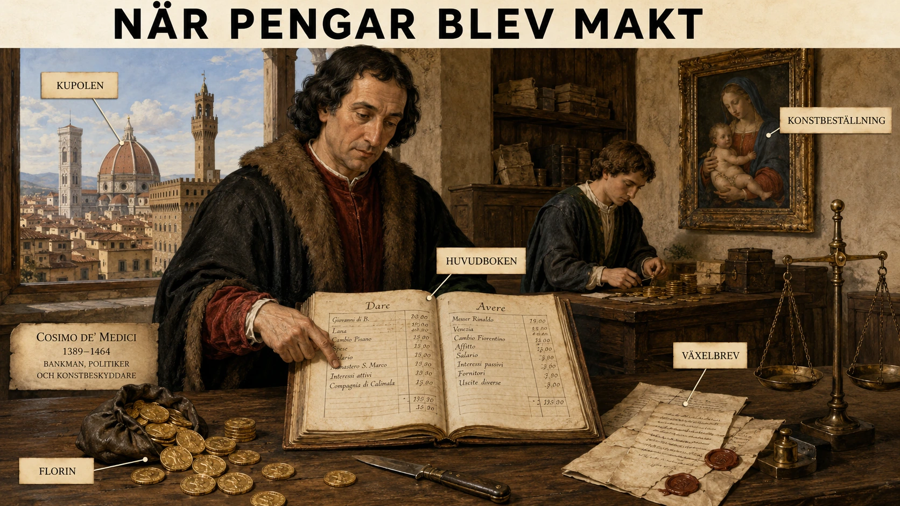

Florens utan kung
Florens på 1400-talet såg inte ut som ett kungarike. Det fanns ingen kung som satt på en tron och styrde med krona och svärd. Staden kallade sig republik, och det fanns råd, ämbeten och val. Ändå visste nästan alla vem som egentligen vägde tyngst i staden: familjen Medici.
Det märkliga var att Medici inte blev mäktiga genom att först vara stora riddare eller erövrare. De blev mäktiga genom något som kunde verka mycket mindre dramatiskt: banker, lån, bokföring, kontakter och förtroende. De visar därför något mycket viktigt om Europas förändring under senmedeltiden och renässansen. Makt började allt mer kunna byggas med pengar, inte bara med jord och vapen.
Cosimo — den osynlige härskaren
Medici var från början en rik köpmanna- och bankirfamilj i Florens. Deras stora genombrott kom med Cosimo de' Medici, ofta kallad Cosimo den äldre. Han styrde inte Florens som en kung. Han var försiktig nog att inte kalla sig härskare. Men han hade pengar, han hade vänner, han hade klienter, och han kunde hjälpa rätt personer vid rätt tillfälle. När någon behövde ett lån, stöd i politiken eller hjälp med en karriär, kunde Medici finnas där. På så sätt skapade Cosimo ett nätverk av tacksamhet och beroende. Från 1434 och nästan tre hundra år framåt kom Medicifamiljen att dominera Florens och senare Toscana, även om det fanns avbrott på vägen.
Det är nästan som om Cosimo upptäckte en ny sorts furstemakt. En medeltida furste kunde säga: "Jag befaller, för jag äger borgen och har soldater." Cosimo kunde i stället säga, utan att säga det högt: "Jag påverkar, för människor behöver mig." Det är en mer modern sorts makt. Den syns inte alltid som en armé på ett slagfält. Den syns i möten, avtal, skulder, vänskaper, äktenskap, gåvor och tjänster.
Lorenzo den magnifike
Cosimos sonson Lorenzo de' Medici, kallad Lorenzo il Magnifico — Lorenzo den magnifike — blev ännu mer berömd. Han var inte bara politisk ledare utan också poet, mecenat och kulturpersonlighet. Under hans tid blev Florens ett av renässansens stora centrum. Konstnärer, filosofer, arkitekter och lärda kunde få stöd av rika familjer.
Här blir sambandet mellan ekonomi och kultur tydligt. När en familj har stora inkomster från bankverksamhet kan den använda pengarna till mer än handel. Den kan köpa inflytande, beställa konst, bygga palats och skapa ett rykte om sig själv. Medici betalade inte bara för tavlor och skulpturer för att de tyckte om skönhet. Konst var också politik. Ett praktfullt palats i Florens sa till stadens invånare: "Vi är mäktiga, bildade och värda att följa." En kyrka, ett bibliotek eller en skulptur kunde fungera som ett meddelande i sten och färg. Medici byggde sitt varumärke långt innan ordet varumärke fanns.
Hela vägen till påvestolen
Familjen nådde också in i kyrkans högsta ledning. Räknar man hela släkten brukar man tala om fyra Medici-påvar: Leo X, Clemens VII, Pius IV och Leo XI. Det säger något avgörande om tiden. Pengar kunde öppna dörrar till religionens, politikens och kulturens centrum. Kyrkan var inte bara en religiös institution. Den var också en enorm politisk och ekonomisk makt — och Medicis pengar nådde ända dit upp.
Men hur kunde banker överhuvudtaget bli mäktiga?
Här uppstår en historisk fråga som är värd att tänka igenom. Kyrkan hade länge varnat för ocker, alltså att ta ränta på lån. Hur kunde banker då bli så viktiga? Svaret ligger i att medeltidens ekonomi förändrades. När handeln bara var lokal kunde människor betala direkt med mynt, varor eller tjänster. Men när italienska köpmän började handla mellan Florens, Venedig, Brügge, London, Konstantinopel och andra platser blev det farligt och opraktiskt att bära stora mängder silver och guld. Handelsmän behövde nya verktyg.
Växelbrevet — pengar utan att flytta mynt
Ett sådant verktyg var växelbrevet. Ett växelbrev fungerade ungefär som ett löfte om betalning på en annan plats och ofta i en annan valuta. En köpman kunde lämna pengar i Florens och få ett dokument som gjorde att han eller hans representant kunde få ut motsvarande summa i Brügge eller London. På så sätt kunde pengar flyttas utan att mynten själva behövde färdas hela vägen.

Växelbrevet var smart av flera skäl. Det minskade risken för rån. Det gjorde handeln snabbare. Det gjorde det möjligt att handla över långa avstånd. Men det kunde också användas för att kringgå kyrkans förbud mot ränta. I stället för att säga "jag lånar ut pengar och tar ränta" kunde man säga "vi växlar mellan olika valutor och olika platser". Vinsten kunde då gömmas i växelkursen. Det betyder inte att alla bankirer var bedragare, men det visar hur ekonomin hittade vägar runt religiösa regler när handeln krävde det.
Dubbel bokföring och Luca Pacioli
Ett annat verktyg var dubbel bokföring. I enkel bokföring skriver man bara upp vad som kommer in och vad som går ut. I dubbel bokföring skriver man varje affärshändelse på två sidor: debet och kredit. Det låter torrt, men det förändrade världen. För en köpman med affärer i flera städer räckte det inte att "ungefär veta" hur det gick. Han behövde kunna se skulder, tillgångar, lager, lån, investeringar och vinst. Dubbel bokföring gjorde handeln mer kontrollerbar.
Här kommer Luca Pacioli in. Han uppfann inte dubbel bokföring, men han beskrev och spred systemet i tryckt form i sin stora bok Summa de arithmetica från 1494. Verket var en tidig tryckt sammanställning som innehöll aritmetik, algebra, geometri, valutaberäkningar och dubbel bokföring enligt de venetianska metoderna. Det är viktigt att förstå skillnaden: Pacioli var inte trollkarlen som plötsligt hittade på allt. Han var snarare den som samlade, systematiserade och gjorde kunskapen mer spridd. Och eftersom hans bok kom strax efter tryckpressens genombrott kunde den nå längre än någon handskriven manual hade kunnat göra.
Försäkring — när risken delas
Även försäkring blev viktig. Sjöhandel var riskfylld. Ett skepp kunde sjunka, kapas av pirater eller förlora lasten i storm. Om en köpman satsade hela sin förmögenhet på en enda transport kunde han bli ruinerad. Genom försäkring kunde risken delas. Flera personer kunde tillsammans bära risken för att något gick fel. Det gjorde att fler vågade satsa på långväga handel — och det är samma princip vi i dag använder när vi försäkrar hus, bilar eller företag.
En ny sorts farlig människa
Medicifamiljen levde mitt i denna nya värld. De var inte bara rika personer — de var specialister på ett nytt ekonomiskt system. De förstod pengar som rörelse: pengar som lån, pengar som löften, pengar som bokföring, pengar som förtroende, pengar som framtida möjligheter. Därför blev de farliga och mäktiga.
En riddare kunde vinna ett slag. En bankir kunde finansiera tio slag, tre furstar, två palats och en påve.
Vad Medici visar oss
Det är detta som gör Medicifamiljen till en perfekt djupdykning. De visar övergången från ett samhälle där jord och börd var viktigast till ett samhälle där kapital, nätverk och kunskap blev allt viktigare. De visar också att renässansen inte bara var vackra tavlor och smarta tänkare. Bakom konsten fanns bokföring. Bakom palatsen fanns banker. Bakom skönheten fanns kredit.
När du tänker på Medici ska du därför inte bara tänka på konst och Florens. Tänk på en historisk förändring: pengar blev makt på ett nytt sätt.